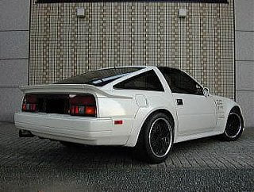
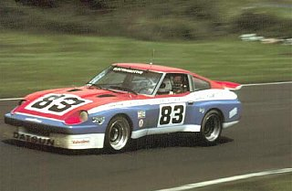

-
Every forum I look at shows some, or none. But I can't find a single forum with any links or businesses that currently exist or still sell those things.
Does anyone have any links to widebody kits? That still are being sold -
That's likely because there are no longer any businesses that offer off-the-shelf widebody kits - Cross Factory & Avante were the only two that come to mind and they're long gone. You'll have to rely on individuals' products now.
MutantZ occasionally sells some replica Cross Factory overfenders for the rear. You could contact him for more info. Otherwise, Mike G (Shamwow) has a completed set of overfenders on his car as an example - as shown in the thread.
Check out this thread: https://z31performance.com/forum/z31…-panel-install
Last edited by Pace; 07-29-2016, 04:49 PM.'86 300ZXT GLL
'78 Datsun 280Z BP
'11 Saab 9-3 Aero XWD -
The Japanese Avante kit is the only one available that I know of https://www.japanparts.com/parts/detail/5272
While I think of it, mine is an '88 and it looks like pretty wide wheels will fit in there without any mods, maybe 11 inch? Fronts about 10?Last edited by 260DET; 07-30-2016, 06:41 PM. -
Pace, i contacted both mutantz and Mike, one answered , the other didn't.
260DET, I've seen that kit, it's not much different than stock. I have an 86 and the control arms almost touch my stock wheels right now, saddening but yeah.
-
what are your wheel and tire specifications -
This pic is I think shows the Avante kit. For my project race car, if it needs to go wider I'll look at extending the stock guards rather than adding something on, I like the S2 look. -
Interesting… I also have an 86 and didn't notice any near contact between the two before switching wheels. Are you using later control arms or are they original to the car? Any mods that may have changed the geometry of things - most people tend to have issues with close proximity between the front struts and wheels when coilovers are added, but proper offset wheels or spacers will resolve that.Originally posted by Zaadro View Post
Also, what wheels would you run with a wide body kit? The wider fenders that came on 86+ can handle fairly wide wheels, as mentioned earlier.'86 300ZXT GLL
'78 Datsun 280Z BP
'11 Saab 9-3 Aero XWD -
88sinz, I have the stock wheels on, the wheels that I'm going to get all depend on the widebody. So they're 15" by weak right now.
260det, I was going to widen my original fenders and quarters but I like the look of over fenders. it's all preference Yunno.
pace, honestly I do not know the parts on this car for I have only owned this one for about 4 months, all I know is I measured it and there isn't much space. I'm doing an s13 subframe swap though. So I'll have multi link arms and I'll be able to fit more and have better coilovers and such. the wheels I'm going to run depend on how wide the fenders are. I want super rs' but then I have to get them redrilled and such haha. -
-
260det I'm not a fan of fender flares due to them being one of the only things you can buy for our cars and it being so common. -
Originally posted by Zaadro View Post
if you're looking to be 'one off,' first these cars (a clean example) are not very common.
Second if there was a market for widebody kits, it would be alive. Hence the *my first car, building a monster, drift project, will these 16x7 +45 rims fit'* zero experience cheapo Z31 scene.
There's almost no middle ground, Cough up $2,500 for a kit that needs to be shipped half way across the world and requires minor modification to fit, or build your own. -
88, if you read back, I never said I wanted to be the only one to have it. Also I'm sure I did say I may customize some from my original fenders and quarters. I know these cars are not common. I've had two. The one I have now is super clean. Just bad paint. Most of these cars rotted out because of the metal they were made with, so having them is awesome in general, no mods at all. I'm fine with it costing a bit. I'm planning on putting it in shows, not drifting it. -
Mutant Z is still making overfenders. Get in touch with him, he'll hook you upLast edited by Augustus Maximus; 08-02-2016, 11:38 AM.Cha iro
enjoy building it yourself.
if it fails, fuck it.
at least you gave it a whirl. -
88 is pretty well on the money, an alternative might be to take the car to a custom shop and see what they suggest. I'm a bit of a fan of boxing guards which would be appropriate for a 80's car. This was done with the 280ZX race cars and is fairly simple to do in that it doesn't require mods to the doors or anything else. This pic should give you some idea. -
Believe me it's nothing personal, and i don't intend to put claim in your court.Originally posted by Zaadro View Post
I'm not sure how familiar with this scene you are, but This is just a very common and recurrent question that never provides follow through 999.999% of the time
These chassis are a labor of beer, sweat, and nonsense.

Copyright © 2006–. All rights reserved. Privacy Policy